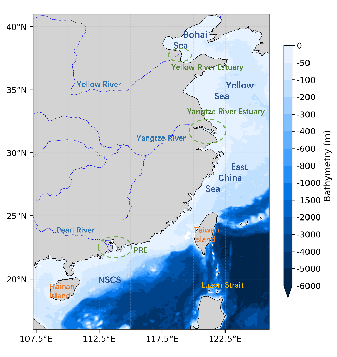

因果引导的区域化深度学习：面向异质海洋系统的叶绿素 a 动态预测
作者：Xuan Wang（通讯）, Huanyu Qi, Wei Li, Guijun Han
天津大学海洋科学与技术学院 · 天津市海洋环境研究与服务重点实验室
资助：国家自然科学基金（42576199）
有害藻华（HABs）对海洋生态系统与人类健康威胁加剧，而叶绿素 a（Chl-a）是藻类生物量的关键指标。现有深度学习模型常被批评为「黑箱」，生态可解释性不足、在环境机制转换下鲁棒性差。本研究提出 因果引导的深度学习框架，将 Liang–Kleeman 信息流理论与 ConvLSTM 结合，预测中国近海及陆架海这一高度异质区域的 Chl-a 动态。
有害藻华（HABs）作为全球性海洋生态灾害，严重破坏海洋生态系统结构，威胁渔业生产、海产品安全与人体健康。Chl-a 作为藻类生物量的关键指标，反映富营养化风险，与 HABs 的发生发展密切相关。
可解释性强，能阐明生态机制并外推至历史条件之外；但依赖复杂过程简化与细致参数化，高度动态环境下易失效。
无需显式物理先验即可提取复杂模式，但捕捉的是统计关系而非因果机制，生态可解释性受限、机制转换下鲁棒性差。
ANN / 随机森林 → LSTM / GRU（时序依赖）→ CNN-LSTM（时空耦合，空间信息提取不足）→ ConvLSTM（卷积门控，时空联合建模，Chl-a 预测表现优异）。
遗留问题：① 预测因子多为经验选取——过多则受数据可得性制约，过少则遗漏关键信息；② 模型多针对特定水体定制，区域差异的成因关注不足，跨区域迁移的可靠性不明。
Liang–Kleeman（LK）信息流理论可区分变量间的因果关系而非统计相关，已在地球系统科学（如 El Niño Modoki 预测）与全球海洋水色动态分析中应用。本研究将其适配为「真实因果」分析工具，用于环境因子与藻类发生的驱动关系识别，并进一步作为预测建模的先验约束。
研究区覆盖中国近海及邻近边缘海（107.25°E–126.00°E，16.00°N–41.00°N），水深从浅水陆架延伸至超过 5000 m 的深水区，受东亚季风、潮汐强迫与洋流共同影响，并叠加河流径流与人类活动排放，生态空间异质性显著。

海洋生物地球化学与物理数据来自哥白尼海洋环境监测服务（CMEMS）：① 全球海洋生物地球化学再分析（NO₃、PO₄、SiO₄、DO、Chl-a）；② 全球海洋集合物理再分析（U、V 流速、SSS、SST）。时间范围 2000-01-01 至 2020-12-31，统一重采样至 0.25°×0.25°、日尺度。
气象强迫数据来自 ECMWF 第五代全球气候再分析 ERA5：地表太阳辐射（SSR，日平均）与总降水（日累计），同期 2000—2020 年、0.25°×0.25°、原始小时尺度。
| No. | 变量 | 缩写 | 单位 | Min | Mean | Max |
|---|---|---|---|---|---|---|
| 1 | 叶绿素 a | Chl-a | mg/m³ | 0.0613 | 0.4003 | 21.9510 |
| 2 | 硝酸盐 | NO₃ | mmol/m³ | 0.0008 | 1.9533 | 108.9583 |
| 3 | 磷酸盐 | PO₄ | mmol/m³ | 0.00002 | 0.0189 | 2.1309 |
| 4 | 硅酸盐 | SiO₄ | mmol/m³ | 1.0523 | 6.8240 | 245.6781 |
| 5 | 溶解氧 | DO | mmol/m³ | 176.2436 | 222.5076 | 433.6261 |
| 6 | 纬向流速 | U | m/s | -1.9317 | 0.0224 | 2.7112 |
| 7 | 经向流速 | V | m/s | -2.0312 | 0.0701 | 2.3659 |
| 8 | 海表盐度 | SSS | PSU | 0.6325 | 32.7803 | 35.4763 |
| 9 | 海表温度 | SST | °C | -1.7800 | 23.5772 | 32.4777 |
| 10 | 地表太阳辐射 | SSR | J/m² | 19410.67 | 569191.81 | 1185101.38 |
| 11 | 总降水 | Precipitation | m | 0.0000 | 0.0043 | 0.3922 |
LKIF 通过计算信息流值来量化变量间的因果关系强度，与传统相关分析不同，它能揭示因果方向并定量描述影响程度。
其中 Cij 为 Xi 与 Xj 的样本协方差，Ci,dj 为 Xi 与 dXj/dt 前向差分近似的协方差。T2→1 非零表示存在因果驱动，为零表示无因果影响。